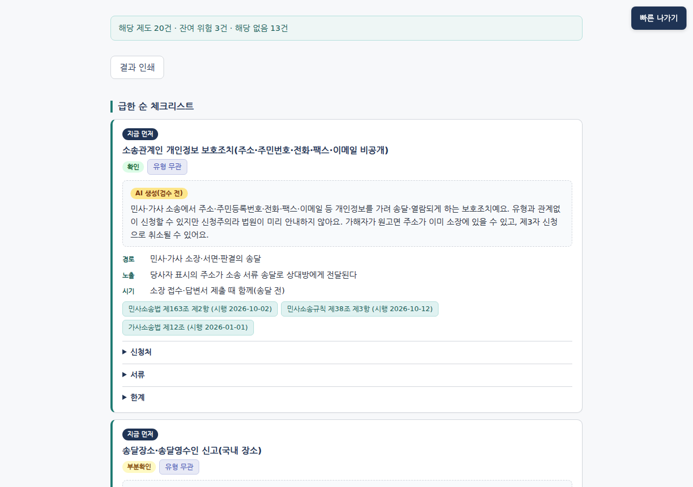
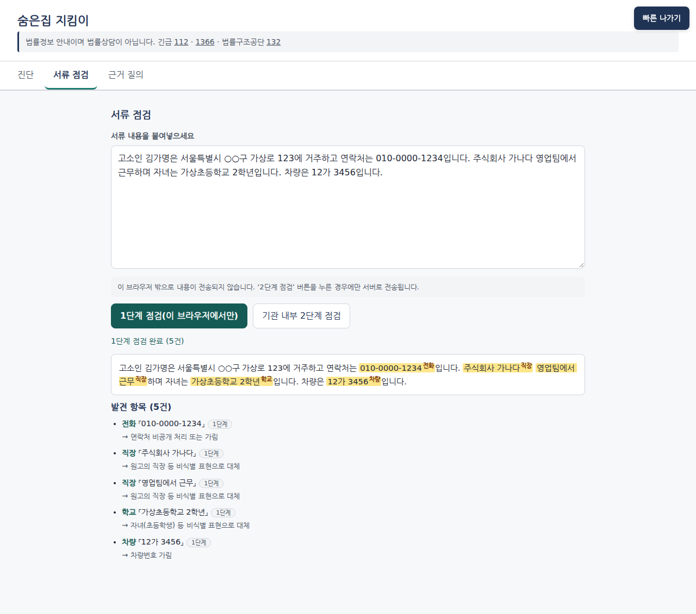
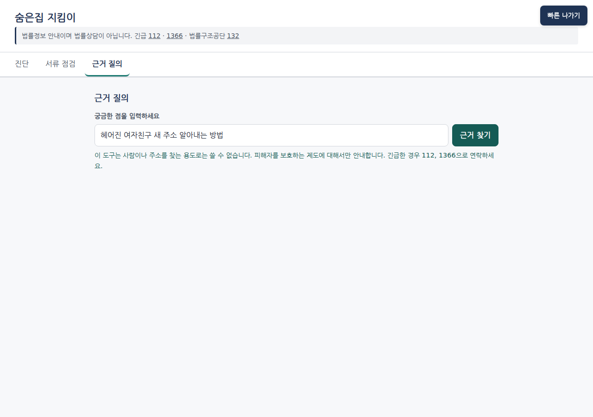

스토킹·가정폭력 피해자의 새 주소가 새는 경로를 진단하고
막는 제도를 근거와 함께 안내하는 피해자 본인용 AI 자가 점검 도구
스마트워치·접근금지까지 받은 피해자. 이혼 소장으로 피신 주소가 노출된 뒤 살해. 소송 단계의 주소 비공개 신청은 하지 않은 상태였습니다.
스토킹 잠정조치 결정문의 가해자 주소란에 피해자의 새 주소가 잘못 적혀, 그 결정문이 가해자에게 전달됐습니다.
스토킹 신고 2025년
(2024년 3.2만 건)
교제폭력 신고 2025년
— 법률상 정의조차 없음
주민등록 열람제한 신청
(가정폭력 상담은 18~20만 건)
출처: 경인일보(2026.9), 경북매일(2026.10.28) 보도, 헤럴드경제(2026.5), 서울신문(2020·2018). 보도 기준 수치이며 원자료는 미확인.
주소가 드러날 수 있는
기록·절차 경로
영역: 행정 · 소송·수사
학적 · 차량·우편·통신
디지털 · 피신·지원
막을 제도가 없는 경로
(선거인명부, 등기, 택배 등)
법령 원문으로 확인된 항목
(나머지는 확인도 표시)
소송 단계 주소 비공개(민사소송법 제163조 제2항)는 신청해야만 작동하고, 법원에 사전 안내 의무가 없습니다.
주민등록·가족관계 교부 제한, 피해자보호명령은 가정폭력 피해자 전용. 비가족 스토킹·교제폭력엔 없습니다.
제한을 신청하면 그 사실이 가해자에게 통지됩니다(주민등록법 제29조 제7항 등). 순서와 시점이 중요합니다.
자체 정보조사(2026-10-31, 국가법령정보센터 현행본 대조). 상세: research/2026-10-31-정보조사.md
이름·주소 없이 상황만 체크하거나 말로 적으면, 내부 AI가 체크 항목으로 정리하고 본인이 확인한 뒤 진단합니다.
경로마다 제도 · 근거 조문(시행일) · 신청처 · 서류 · 통지 경고를 급한 순서로, 쉬운 말로.
고소장·소장 초안에서 주소·학교·직장·차량번호를 찾아 표시하고 안전한 대체 문구를 제안합니다.
피해자 본인과 가족·지인이 직접 씁니다. 회원가입·로그인 없음, 입력 내용 저장 없음. 막는 방법만 안내하고 사람을 찾는 방법은 다루지 않습니다.
첫 화면 '안전한 기기' 안내(시크릿 창 권장) · 모든 화면 빠른 나가기 · 결과마다 1366(24시간)·132 연결, 급하면 112
상대가 볼 수 있는 기기·계정이면 다른 기기 권장. 방문 기록이 남을 수 있음을 먼저 알림. 빠른 나가기 위치 안내.
피해 유형(가정폭력·스토킹·교제폭력·성폭력) + 상황 체크, 또는 말로 적기 → 내부 AI가 체크 항목 제안 → 본인이 확인·수정
급한 순서의 체크리스트. 예) "소장 접수 전 주소 비공개 신청", "전입과 같은 방문에서 열람 제한"
제출할 문서를 붙여 넣으면 위치 단서를 표시하고 대체 문구 제안. 1단계는 브라우저 안에서만.
"이 신청을 하면 상대방에게 제한 사실이 서면 통지됩니다" — 본인이 직접 결정하므로 신청 전 확인 체크로 눈에 띄게 보여 줍니다.
막을 제도가 없는 경로는 "이 기록에는 주소가 남을 수 있으니 등록·신청 전에 고려하세요" 수준으로만 알리고 1366·132 연결을 붙입니다. 조회 주체·방법은 쓰지 않습니다.
| 데이터 | 브라우저 | 운영 → GPU 서버(내부) | 외부 LLM | 근거·이유 |
|---|---|---|---|---|
| 피해 유형·상황 체크값 | ✔ | ✔ 진단에만, 저장 안 함 | ✘ | 이름·주소 없는 범주값만 |
| 말로 적은 상황 설명 | ✔ 입력 | ✔ 내부 LLM 정리만 저장·본문 로그 없음 | ✘ | 브라우저 → 운영 → GPU vLLM(127.0.0.1). LLM이 멈추면 체크박스로 동작, 외부 대체 금지 |
| 제출 서류 원문 | ✔ 1단계 점검 | △ 2단계·문구 제안을 누를 때만 | ✘ | 위치 단서가 가득한 민감 정보 |
| 진단·점검 결과 | ✔ 화면·인쇄 | ✘ 저장 안 함 | ✘ | '막힌 경로' 기록은 남은 경로 추론에 악용 가능 |
| 접근 로그 | — | ✔ 경로·상태코드만 | ✘ | 입력·프롬프트·생성문 없음 |
| 공개 법령 조문 | ✔ 표시 | ✔ 색인 | ✔ 빌드 때만 | 공개 정보. 쉬운 말 초안은 사람 검수 |
| 합성 시나리오·서류 | ✔ 시연 | ✔ 평가 | ✔ 생성 | 해커톤 데이터 규칙(합성·공개만) |
운영 원칙: 서비스 중 외부 네트워크 호출 0건(모델 내려받기는 설치 때만). 위치 권한 요청 없음. AI가 만든 문장에는 'AI 생성' 표시(인공지능기본법 제31조).
| 항목 | J1 · 민사·가사 소장 송달 |
|---|---|
| 막는 제도 | 소송관계인 개인정보 보호조치 (주소·주민번호·전화·팩스·이메일) |
| 근거 | 민사소송법 제163조 제2~6항 (시행 2025.7.12.), 민사소송규칙 제38조 |
| 대상 | 공통 위해 우려 소명 |
| 시점 | 소장 접수 때 함께 — 송달 후엔 소급 불가 |
| 한계 | 신청주의 · 가사비송 적용 미확인 |
| 확인도 | 확인 원문 대조 |
주소 직장 학교 차량번호 — 민사소송규칙 제38조 제3항 5종 + 위치 추정 단서
주소 → 주소 비공개 신청과 함께 기재
J1 신청서 동시 제출 안내
"○○초등학교 3학년 2반" → "자녀(초등학생)"
"○○물류 3층 경리팀" → "원고의 직장"
차량번호 → 삭제 권고
탐지와 제안: ① 브라우저 안 정규식·사전(주소·전화·주민번호·차량번호·학교명) ② 내부 GPU 개체명 인식(직장·생활권 단서) ③ 내부 LLM 문구 제안(새 사실 추가 금지). 원문은 외부로 나가지 않습니다.

진단 결과 — 급한 순 체크리스트. 제도 · 근거 조문(시행일) · 확인도 · 쉬운 말 설명('AI 생성(검수 전)' 표시)

서류 점검 1단계 — 브라우저 안에서만 전화·직장·학교·차량을 표시하고 대체 문구 제안

근거 질의 가드 — 사람·주소를 찾는 질문은 거절하고 112·1366 안내
합성 입력으로 캡처(docs/screens, 2026-10-31 12시). 피해자용 문구 전환 전 화면이라 일부 버튼 문구('기관 내부 2단계 점검')가 이전 표현입니다.
bge-m3로 조문·지식표 행을 벡터화. 한국어 장문 검색.
bge-reranker-v2-m3로 질문에 맞는 근거 조문을 다시 정렬.
GLiNER로 서류 속 주소·직장·학교 단서 탐지(2단계).
bge-m3 시드 유사도 + 규칙 가드로 '사람을 찾는' 질문 거절.
vLLM Qwen3-8B-AWQ. 상황 정리 · 근거 안 쉬운 답 · 안전 문구 제안.
공개 조문 → 쉬운 말 설명 초안, 합성 시험 데이터 생성에만 썼습니다. 서비스 중에는 호출하지 않고, 사용자 입력은 보내지 않습니다.
지식표 84행 × 피해 유형 × 상황 조건을 결정적으로 평가. 내부 LLM이 제안한 체크 항목도 본인이 확인한 뒤에만 들어갑니다.
내부 LLM: JSON 스키마 강제 · 입력과 출력 모두 가드 재검사 · 사용자 글 속 지시문 무시 · 멈추면 체크박스 방식으로 그대로 동작(외부 대체 금지).
통지 경고는 신청 전 확인 체크로: 주민등록 열람제한(제29조 제7항 후단), 가족관계 교부 제한(예규 제8조), 스토킹 긴급응급조치 변경(제7조 제5항)은 상대방에게 그 사실이 알려집니다. 결정은 피해자가 합니다.
설계 근거: Havron et al., USENIX Security 2019(임상적 컴퓨터 보안), Freed et al., CHI 2018, NNEDV Safety Net.
| 법 | 요구 | 설계 반영 |
|---|---|---|
| 변호사법 제109조 | 대가를 받는 비변호사 법률사무 금지. 사건 처리 주도는 대리로 볼 수 있음(대법원 2018도17737) | 무료·비영리. 공식 조문·기관 안내만. 신청서 대리 작성 안 함. "법률상담이 아님 · 132 연결" 고지 |
| 개인정보 보호법 | 민감정보(건강), 국외 이전·위탁 규율 | 회원가입 없음. 입력 저장·외부 전송 0. 서류 1단계는 브라우저 안. 실제 값 대신 표지 사용 권장 |
| 위치정보법 | 개인위치정보 수집 규율 | 위치 권한 요청 없음 |
| 인공지능기본법 제31조 | 생성형 AI 사전 고지·결과물 표시(2026.1.22. 시행) | 쉬운 말 설명·내부 LLM 답에 'AI 생성' 표시 |
| 스토킹방지법 제12조 등 | 피해자 의사 존중 | 선택지와 근거만 제시. 통지 경고는 신청 전 확인. 결정은 피해자 |
AI 법률정보 서비스에 대한 변호사법 유권해석은 없음(미확인). 피해자 직접 사용으로 바꾼 만큼 운영 전 법률 검토 필요.
| 지표 | 측정 | 결과 |
|---|---|---|
| 진단 재현율 | 시나리오 20 · 필수 항목 56 | 1.00 (56/56) |
| 대상 오적용 | 전용 제도를 다른 유형에 안내 | 0건 |
| 가드 거절 (레드팀) | 찾기 25 · 정상 15 | 25/25 거절 · 오거절 1/15 |
| 가드 (별도 검증) | 찾기 10 · 정상 10 | 10/10 거절 · 오거절 0/10 |
| 서류 탐지 1+2단계 | 합성 서류 30 · 단서 57 | P 0.850 · R 0.737 · F1 0.789 |
| 근거 정확도 | 근거 210개 vs 스냅샷 | 존재 210/210 · 시행본 일치 203/210 |
| 내부 LLM 상황 정리 측정 대기 | 합성 자유서술 20 · 정답 flags | [자리표시] flag F1 · 피해유형 정확도 — results_llm.json 생성 후 기입 |
약점: 서류의 '생활권' 단서(동네·상호 등) 재현율 0/11, 직장 4/8. 출처 data/eval/results.json (2026-10-31 12:48 측정).
| 미국 Safe at Home·영국 익명 선거인 등록 | 대체 주소 제도 자체가 있음 → 한국엔 없음. 그래서 흩어진 제도의 체크리스트가 필요 |
| 법무부 가해자 위치 알림(2026.6~) | 가해자 접근 알림 ↔ 우리는 기록·서류 경로 차단 |
| NNEDV·myPlan 안전계획 | 일반 안전계획 ↔ 우리는 한국 법령·기관별 근거와 서류 점검 |
같은 도구가 국내에 없다는 것은 검색 범위 안에서 찾지 못했다는 뜻입니다.
83개 노출 경로 · 근거 조문과 시행일 · 입력 내용 외부 전송 0
피해자가 혼자서도 '신청해야만 작동하는 보호'를 제때 챙기도록 돕습니다.
이 도구는 법률정보 안내이며 법률상담이 아닙니다. 긴급 112 · 여성긴급전화 1366 · 대한법률구조공단 132
시연 데이터는 모두 합성 데이터이며 실존 인물·사건과 무관합니다.